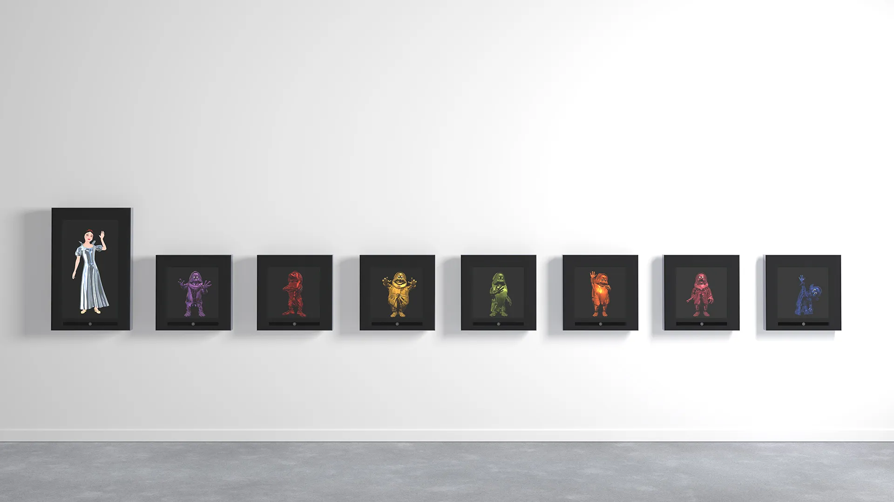
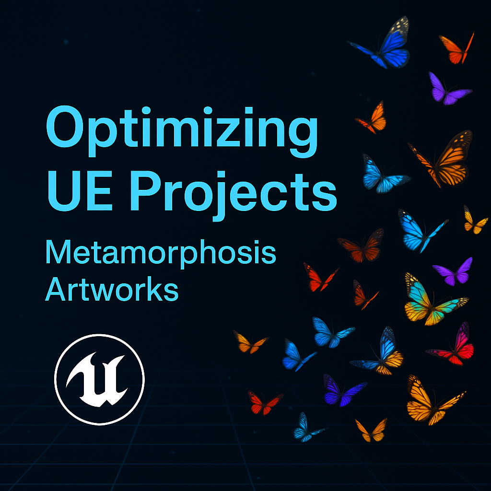
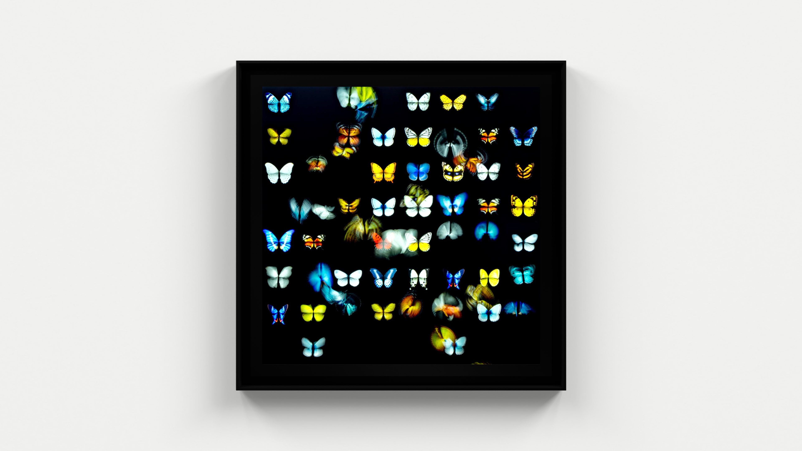
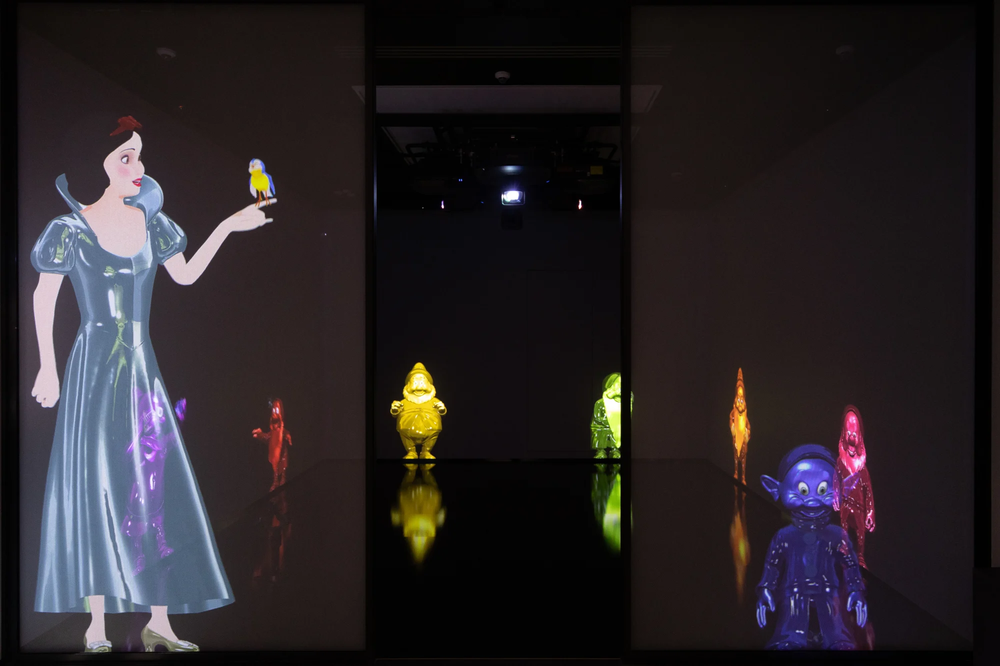
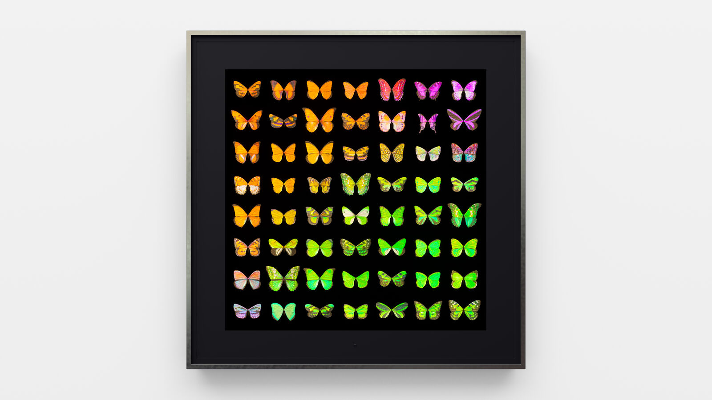
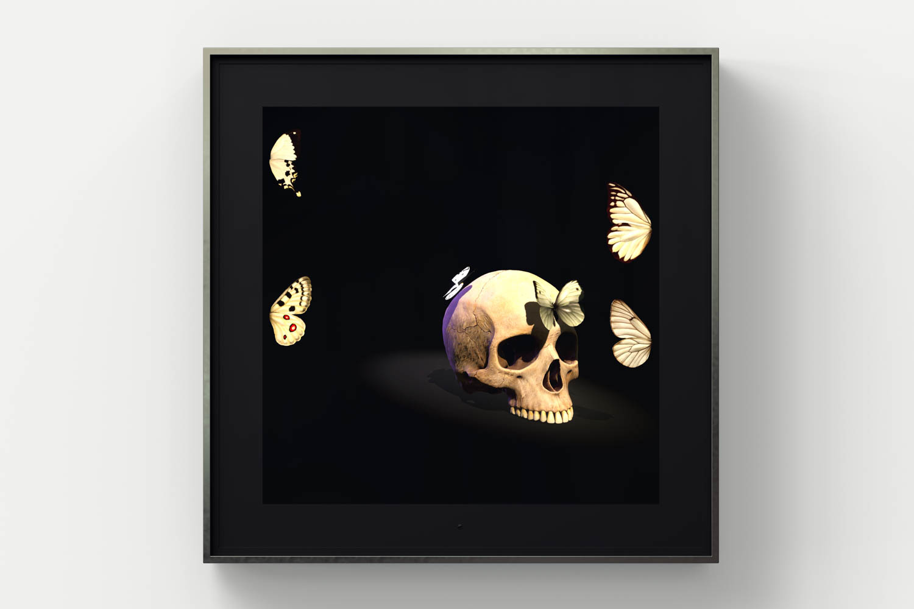
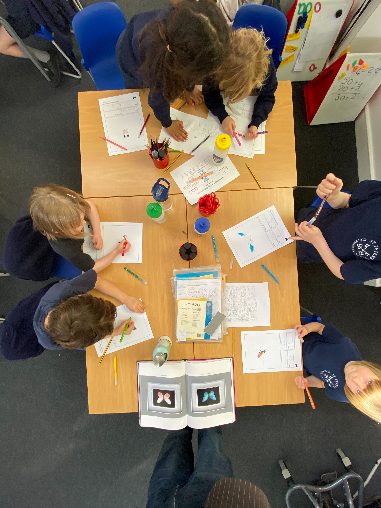
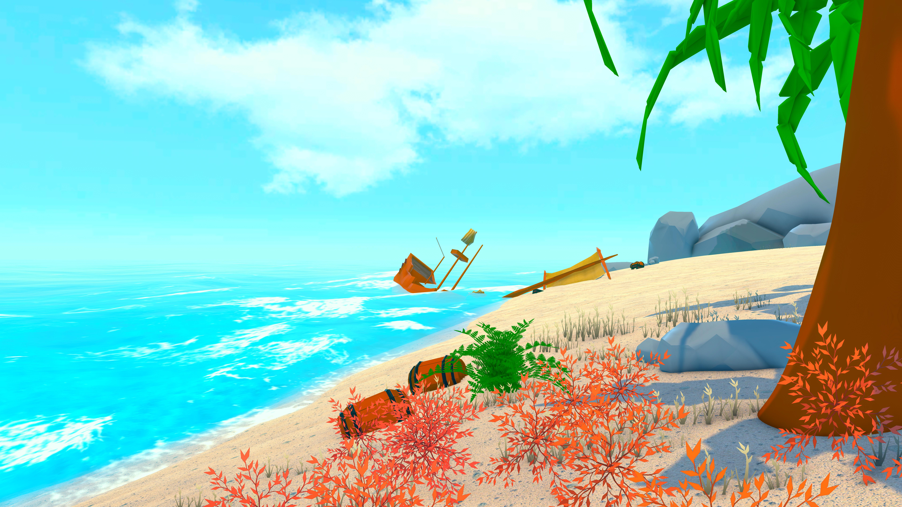

Unseen
UE4/UE5 interactive artwork. Contributed Blueprint and Python systems, asset streaming, colour services and exhibition deployment.
Portfolio
Interactive systems, creative technology and software development.
Jump to
Filter by contribution
Showing all projects.
Dominic Harris Studio
UE4/UE5 interactive artwork. Contributed Blueprint and Python systems, asset streaming, colour services and exhibition deployment.

Modernised a Unity 5 artwork, improving tracking, visuals and runtime performance across evolving hardware.

Unreal Engine optimisation across animation, materials, asset handling and deployment for multiple formats.

Developed and deployed Unreal Engine seasonal artwork experiences, including performance and Linux hardware work.

Unity immersive installation with real-time gesture input, projection workflows and on-site configuration.

UE5 immersive installation work across multi-display presentation, networking and interactive input.

Smaller-format Unreal artwork: runtime optimisation, draw-call reduction and animation-system work.

Updated and supported a legacy Unreal Engine installation for new hardware and deployment requirements.

Unity WebGL and mobile interactive artwork with touch-led collaborative interaction.

Unity foliage and shader profiling to reduce continuous runtime GPU and CPU load.
Measured outcomes
Maintained 60 FPS across the collection, with 11 ms game-thread and 9 ms GPU-thread times.
Introduced a butterfly mesh with 95.6% fewer triangles, 93.6% fewer vertices and 46% fewer bones, plus runtime efficiency improvements.
Memory-optimisation work deployed following quality assurance and release preparation.
Optimised assets, motion blur, LOD behaviour and runtime resource handling.
Independent work

Technical-art and programming contribution to a dungeon-crawler RPG.
Unity project exploring Perlin-noise terrain chunks and procedural placement for 3D game environments.

Collaborative retro PS1-inspired zombie-survival game.

Accessible first-person puzzle game using environmental and audio feedback.

Atmospheric narrative Unity game focused on exploration and interaction.

3D serious game for hazard-perception training and final-year research.